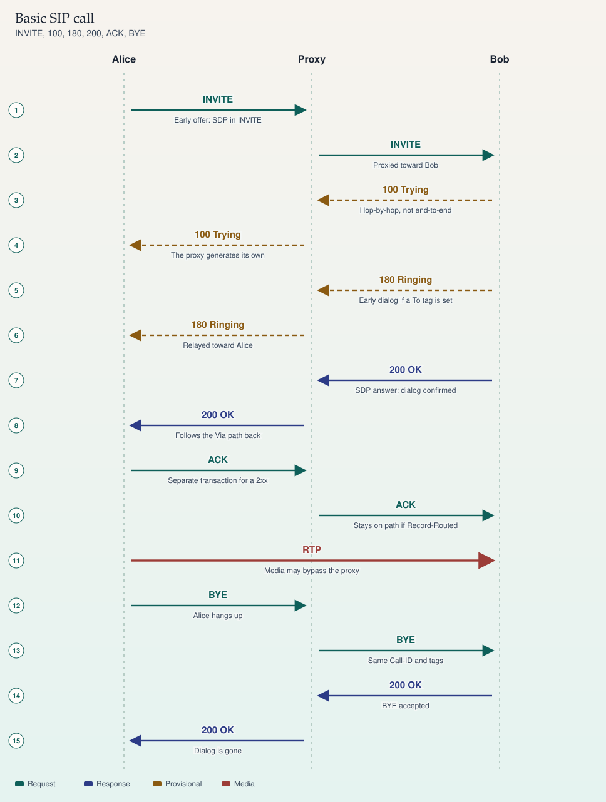

SIP · RFC 3261
Basic call
The call is not up until ACK completes the 200 OK. Media often skips the proxy.
- INVITE — Early offer: SDP in the INVITE.
- INVITE — The proxy forwards toward Bob. Record-Route keeps it on the path.
- 100 — 100 Trying is hop-by-hop. Alice's 100 comes from the proxy, not from Bob.
- 100 — The proxy generates its own Trying.
- 180 — 180 Ringing. A To tag starts an early dialog.
- 180 — Relayed toward Alice.
- 200 — SDP answer. The dialog is confirmed only after ACK.
- 200 — Follows the Via path back.
- ACK — ACK for a 2xx is end-to-end, its own transaction.
- ACK — Stays on the path when Record-Route is set.
- RTP — Media can go direct. The proxy may never see it.
- BYE — Either side ends the dialog.
- 200 — The BYE transaction completes.
Separate signaling from media. A perfect ladder with a private address in SDP c= is still one-way audio. 100 is not ringing. 180 is not answer.
Sources
Study card carried forward
SIP · RFC 3261
Basic call
Alice calls Bob through a proxy. Signaling may hairpin at the proxy. Media often goes direct. The call is not up until ACK completes the 200 OK.

On a phone, swipe a wide ladder sideways. The steps below repeat the same sequence.
Sequence
- INVITE — Alice to Proxy. Early offer: SDP in INVITE
- INVITE — Proxy to Bob. Proxied toward Bob
- 100 Trying — Bob to Proxy. Hop-by-hop, not end-to-end
- 100 Trying — Proxy to Alice. The proxy generates its own
- 180 Ringing — Bob to Proxy. Early dialog if a To tag is set
- 180 Ringing — Proxy to Alice. Relayed toward Alice
- 200 OK — Bob to Proxy. SDP answer; dialog confirmed
- 200 OK — Proxy to Alice. Follows the Via path back
- ACK — Alice to Proxy. Separate transaction for a 2xx
- ACK — Proxy to Bob. Stays on path if Record-Routed
- RTP — Alice to Bob. Media may bypass the proxy
- BYE — Alice to Proxy. Alice hangs up
- BYE — Proxy to Bob. Same Call-ID and tags
- 200 OK — Bob to Proxy. BYE accepted
- 200 OK — Proxy to Alice. Dialog is gone
Dialogs
A dialog is identified by the Call-ID, the local tag, and the remote tag. The UAC puts a tag on From. The UAS puts a tag on To in a response. A provisional response with a To tag creates an early dialog. The dialog is confirmed when the UAC receives a 2xx to the INVITE.
This ladder is an early offer: Alice puts the SDP offer in the INVITE, and Bob puts the answer in the 200 OK. A delayed offer is the other shape: the INVITE has no SDP, the offer arrives in the 200 OK, and the answer comes back in the ACK.
What is hop-by-hop
- 100 Trying is hop-by-hop. The proxy answers Alice so she stops retransmitting. Bob's 100, if he sends one, is for the proxy.
- ACK for a 2xx is a new transaction and travels the dialog route set. If the proxy sent
Record-Route, it stays on the ACK and the later BYE. If it did not, those requests go straight to the remote target in Contact. - ACK for a non-2xx final response, such as 486 Busy Here, belongs to the INVITE transaction. It is hop-by-hop and is not a separate end-to-end transaction.
- BYE ends a confirmed dialog. The other side answers 200 OK. The Call-ID does not change.
Sources
- RFC 3261, sections 12 (dialogs), 13 (INVITE), 15 (BYE), and 17 (transactions)
- Example: sip:alice at example.com at 192.0.2.10 calls sip:bob at example.com at 192.0.2.20